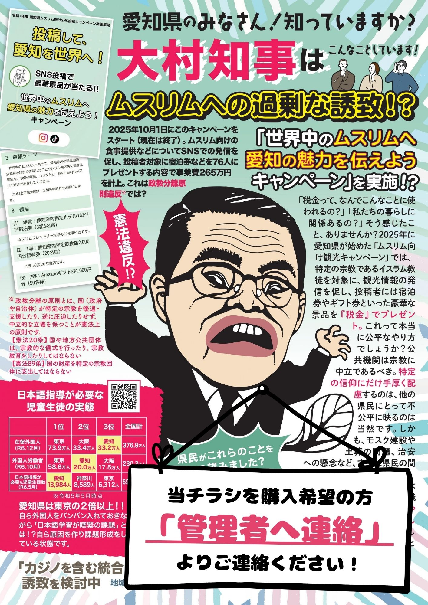

エリア詳細
⠿
ここを持って移動
×
確認メッセージ
OK
キャンセル
確認するエリアを選択
キャンセル
✎ エリアを作図
エリアを作図
ここに点を追加
1つ戻る
囲み終わり
キャンセル
＋
参考画像の位置を調整
青い中央マークを動かすと画像全体を移動できます。
オレンジの角マークで大きさを調整できます。
画像をやめる
完了
写真の位置は合っていますか？
調整する
合っています
スクショ上の地点Aを選んでください
分かりやすい交差点などを選んでください。次に地図上で同じ場所を選びます。
最初から
やめる
位置合わせ用の一点目Aをタップ
分かりやすい交差点などを選んでください。
A
B
−
100%
＋
画像をやめる
こちらのエリアでよろしかったですか？
いいえ・作図に戻る
いいえ
作図に戻る
はい
道路中心線位置合わせ診断
×
エリア検索
入力した条件をすべて満たすエリアを、地図上に黄色いラインで表示します。
種類
すべて
配布予定
配布済
実施日
開始日
年
月
日
📅
終了日
年
月
日
📅
担当者
選択
手入力
指定しない
枚数
～
キーワード
（全項目・部分一致）
エリアID
（部分一致）
条件をクリア
検索
キャンセル
移動先を選択
キャンセル
配布エリア登録
※種類
選択する
配布予定
配布済
※配布予定エリアは登録から1週間で自動削除されます。
配布予定日または配布実施日
年（未入力も可）
2026
2027
月（未入力も可）
日（未入力も可）
枚数
担当者
既存名から選択
手入力
指定しない
備考
OK
キャンセル
配布済にする
種類
配布予定日または配布実施日
年（未入力も可）
2026
2027
月（未入力も可）
日（未入力も可）
枚数
担当者
備考
配布済にする
キャンセル
修正依頼
修正したい項目だけ入力
種類
未入力も可
配布予定
配布済
配布予定日または配布実施日
年（未入力も可）
2026
2027
月（未入力も可）
日（未入力も可）
枚数
担当者
備考
修正依頼
キャンセル
管理者へ依頼
どちらの依頼を送信しますか？
削除依頼
修正依頼
キャンセル
読み込み中...
最新情報に更新中です…

×
このチラシの配布エリア共有マップです
×
～みんなの活動報告～
いつもありがとうございます！
管理者へ連絡
管理者へ連絡
連絡先が空欄の場合は「管理者修正履歴」より返信させていただきます。
※タイトル
※内容
名前
メールアドレス
備考
送信
キャンセル
配布予定
（ ↑ 1週間で自動削除）
配布済
管理者修正履歴
（タップで開閉）
読み込み中...
▼スクロールできます
エリア検索
検索条件を変更
検索解除
全体表示
愛知県全体へ戻る
📍 現在地を取得
現在地はこの端末でのみ
表示されます。